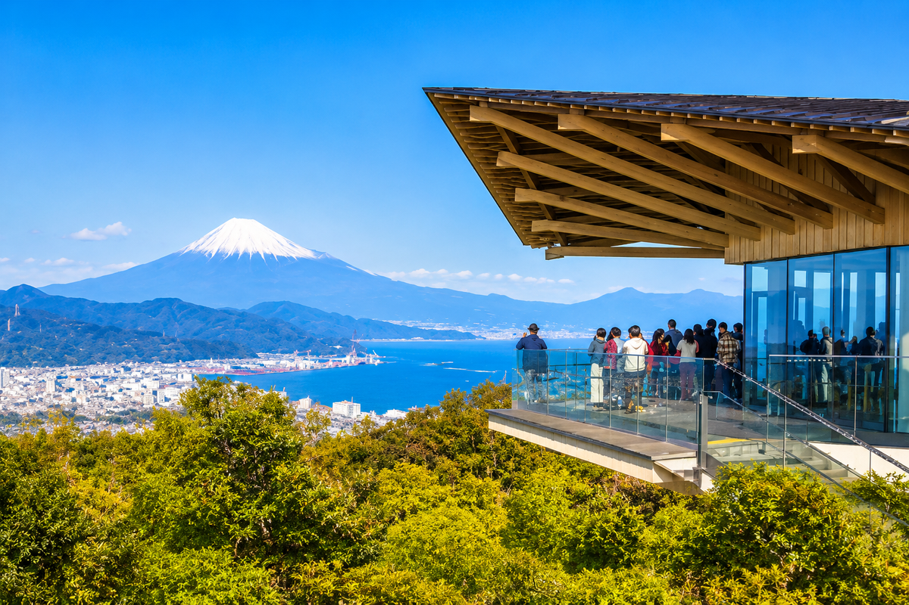
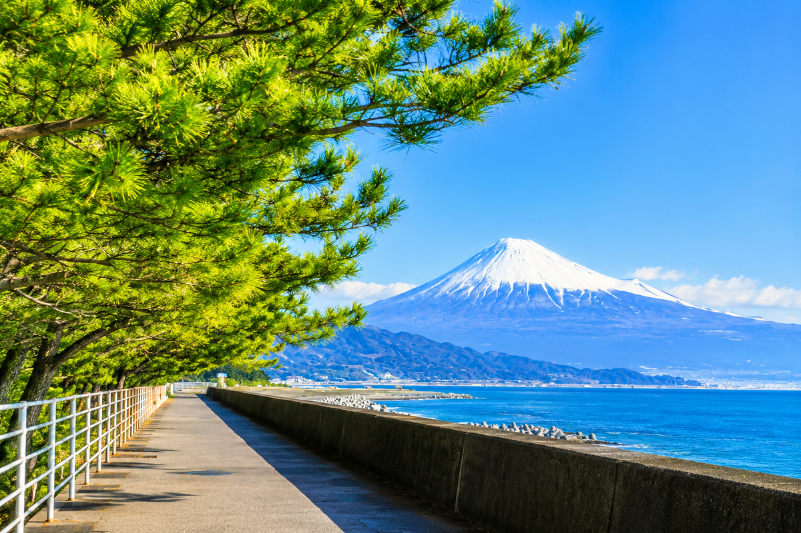
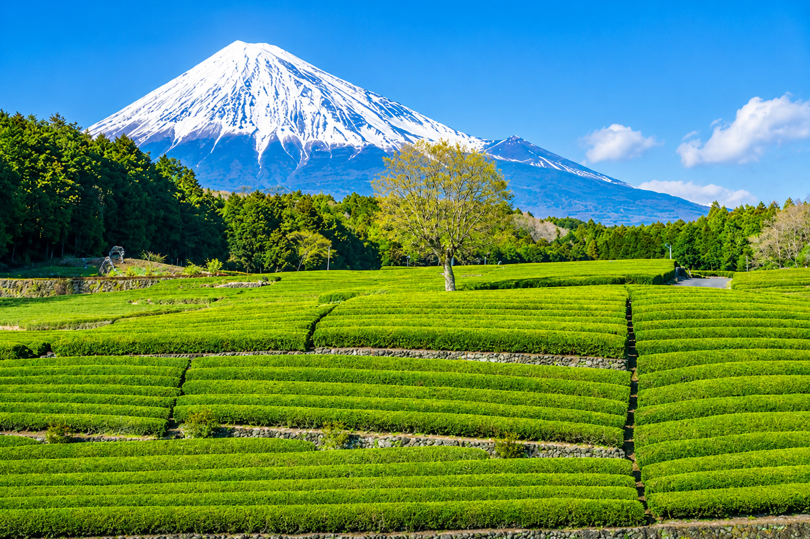
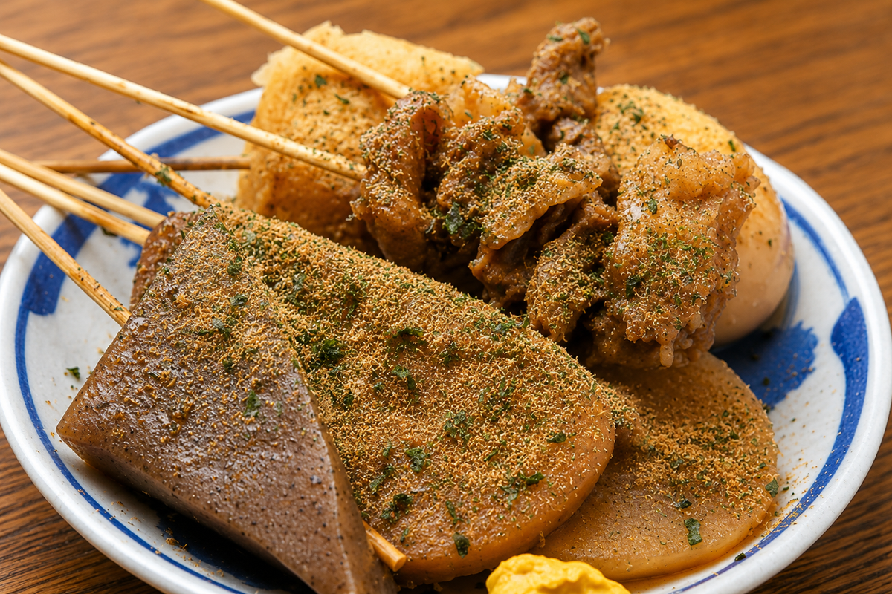

富士山を見るだけでなく、
静岡の味と一緒に楽しむ旅。
富士山静岡空港からレンタカーで静岡・清水方面へ。 日本平や三保松原で富士山と駿河湾の景色を楽しみ、 由比・富士宮方面へ足を延ばします。徒歩中心の観光は避け、 展望施設、海沿い、神社、市場を組み合わせたゆとりある内容です。
富士山と駿河湾を眺めながら、桜えび、海鮮、静岡おでん、 お茶のスイーツを味わう。移動を詰め込みすぎない、景色と食の王道コースです。
富士山静岡空港からレンタカーで静岡・清水方面へ。 日本平や三保松原で富士山と駿河湾の景色を楽しみ、 由比・富士宮方面へ足を延ばします。徒歩中心の観光は避け、 展望施設、海沿い、神社、市場を組み合わせたゆとりある内容です。
駐車場から比較的組み込みやすい場所を中心に選びました。

富士山、駿河湾、清水港を一望できる展望スポット。天候の良い時間帯を優先して訪れます。

松林と海越しの富士山を楽しめる、静岡を代表する景観です。

電線の少ない茶畑越しに富士山を望める、静岡らしい景色です。
入り組んだ海岸線と小島が美しい西伊豆の絶景。夕景も魅力です。
海鮮、B級グルメ、お茶スイーツまで、静岡らしさを幅広く。

桜えびとしらすを味わえる、駿河湾ならではの海の幸。

香ばしく焼き上げた鰻を、静岡の旅のごちそうとして楽しみます。

黒いだしと青のり・だし粉が特徴の静岡定番グルメ。

抹茶パフェやジェラートを、お茶と一緒にゆっくり味わいます。
4月中旬〜下旬は、天候が安定すれば雪を残した富士山と春の海景色を楽しめます。 桜えびやいちご、お茶を使ったスイーツも旅のテーマにしやすい時期です。 富士山は雲に隠れることもあるため、見える時間帯を優先して予定を入れ替えます。
細かな時間は航空便と宿泊先が決まってから調整します。
空港でレンタカーを受け取り、日本平へ。富士山が見えていれば展望を優先し、清水港で海鮮を楽しみます。
三保松原を無理のない範囲で見学。由比で桜えび料理を味わい、富士山本宮浅間大社または白糸ノ滝へ向かいます。
焼津さかなセンターなどで買い物と昼食。時間に余裕があれば茶の施設やスイーツ店へ寄り、空港へ戻ります。
富士山静岡空港の到着ロビーにはレンタカー受付窓口があります。 空港から静岡市方面までは車でおよそ40分が公式案内の目安です。 航空便は出発地と旅行日が決まった段階で確認します。